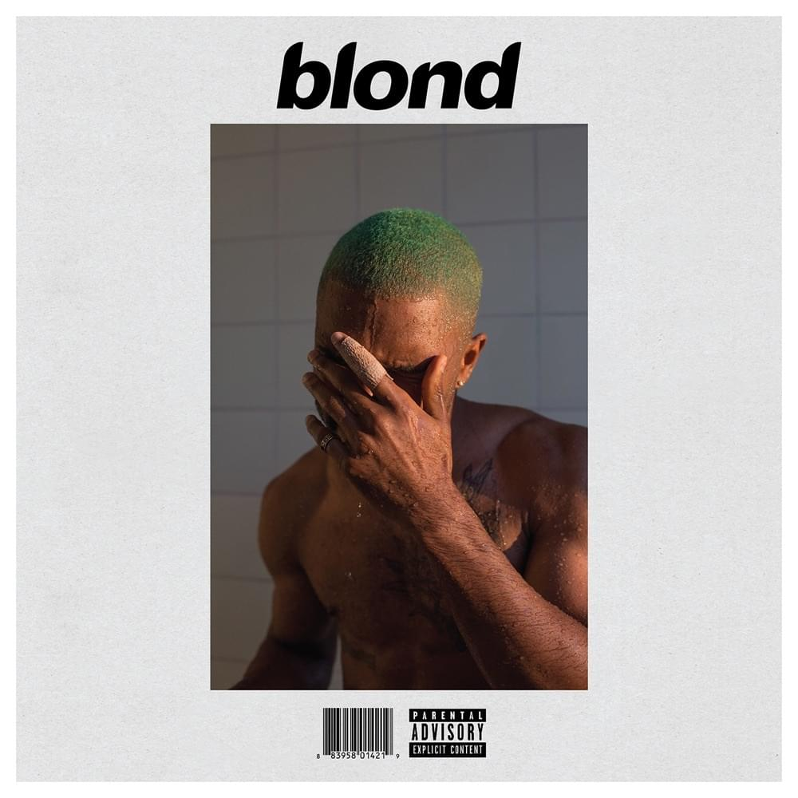
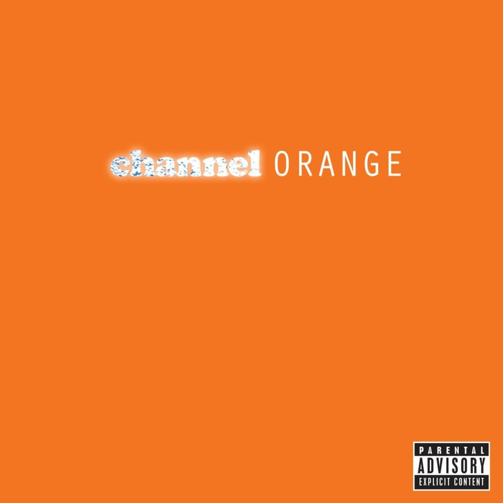
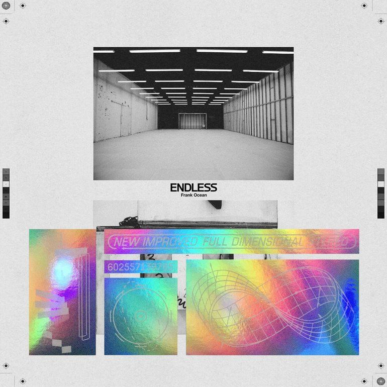

| Άλμπουμς | Ημερομηνία Κυκλοφορίας | Διάρκεια | Είδος | Τραγούδια |
|---|---|---|---|---|
| >Blonde  |
20 Αυγούστου 2016 | 60:08 | R&B,ψυχεδελική ποπ | Nikes 5:14 Ivy 4:09 Pink + White 3:04 Be Yourself 1:27 Solo 4:17 Skyline To 3:04 Self Control 4:09 Good Guy 1:06 Nights 5:07 Solo (Reprise) 1:18 Pretty Sweet 2:38 Facebook Story 1:08 Close To You 1:25 White Ferrari 4:08 Seigfried 5:34 Godspeed 2:58 Futura Free |
| >channel ORANGE  |
10 Ιουλίου 2012 | 62:18 | Εναλλακτική R&B,νέο σάουλ | Start 0:46 Thinkin Bout You 3:21 Fertilizer 0:40 Sierra Leone 2:29 Sweet Life 4:23 Not Just Money 1:00 Super Rich Kids 5:05 Pilot Jones 3:04 Crack Rock 3:44 Pyramids 9:54 Lost 3:54 White 1:16 Monks 3:20 Bad Religion 2:55 Pink Matter 4:29 Forrest Gump 3:15 End 2:15 |
| >Endless  |
19 Αυγούστου 2016 | 45:52 | R&B,Περιβαλλοντική ποπ | Device Control (performed by Wolfgang Tillmans) 0:56 (At Your Best) You Are Love 5:21 Alabama 1:25 Mine 0:32 U-N-I-T-Y 2:54 Ambience 001: A Certain Way 0:11 Comme des Garçons 0:59 Xenons 0:31 Ambience 002: Honey Baby 0:09 Wither 2:34 Hublots 1:48 In Here Somewhere 1:45 Slide on Me 3:07 Sideways 1:54 Florida 1:15 Impietas / Deathwish (ASR) 1:56 Rushes 3:26 Rushes To 2:12 Higgs 3:39 Mitsubishi Sony 2:26 Device Control 7:04 |
| >nostalgia,ULTRA | 16 Φεβρουαρίου 2011 | 42:06 | Ενναλακτική R&B | Street Fighter 0:23 Strawberry Swing 3:55 Novacane 5:03 We All Try 2:52 Bitches Talkin' (Metal Gear Solid) 0:22 Songs For Women 4:13 Lovecrimes 4:00 Goldeneye 0:18 There Will Be Tears 3:15 Swim Good 4:17 Dust 2:34 American Wedding 7:01 Soul Calibur 0:18 Nature Feels 3:43 |